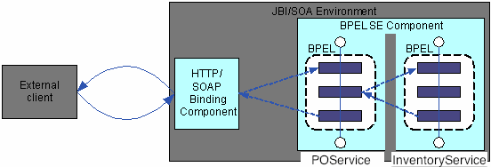
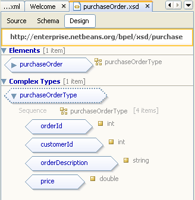
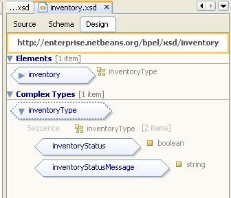
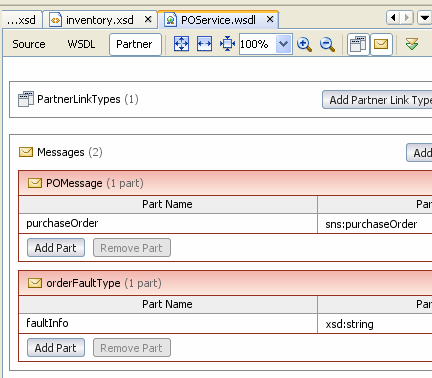
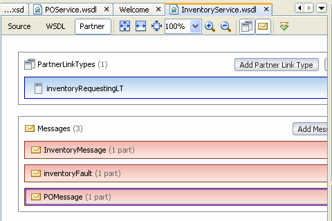
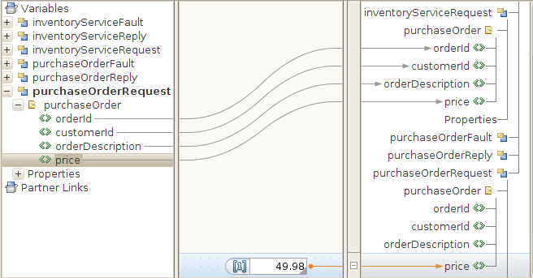
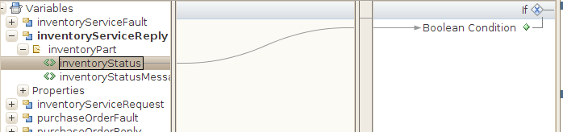
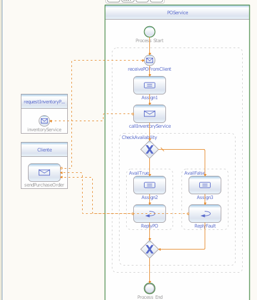
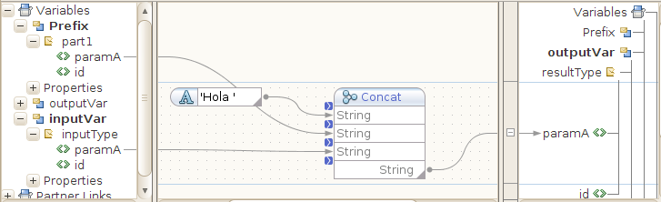

Ejercicios de Procesos PBPEL síncronos y asíncronos
- Proceso BPEL síncrono: Servicio de orden de compra.
-
Proceso BPEL asíncrono. Uso de correlación: Hola Mundo.
- Modificamos el fichero de esquema
- Modificamos el wsdl del proceso bpel
- Añadimos un estado al proceso de negocio
- Definimos las propiedades de correlación y los alias de las propiedades
- Creamos y añadimos los Correlation sets
- Compilación y despliegue del proceso bpel
- Pruebas y debugging del proceso BPEL
Proceso BPEL síncrono: Servicio de orden de compra.
Como ya hemos indicado, las operaciones síncronas son adecuadas en procesos de negocio que, ante una petición, requieren una respuesta inmediata. La ejecución, en la parte del consumidor del servicio puede continuar solamente después de que la respuesta sea recibida y procesada.
Con este ejercicio utilizaremos un proceso BPEL, denominado POService que: (a) proporciona una operación síncrona a un cliente externo; (b) consume una operación síncrona suminstrada por un servicio Web partner (1,5 puntos).
Recordemos que cuando se diseña un proceso de negocio que incorpora interacciones con servicios Web síncronos, se necesitan las siguientes construcciones:
- partnerLinks que representan servicios Web partner
- variables que almacenan los datos intercambiados entre los servicios Web
- Una actividad invoke para consumir un servicio
- Un par de actividades receive-reply para proporcionar un servicio
- Mapeados de datos de entrada y salida para conseguir la lógica de negocio requerida
Lógica de negocio de los servicios
Los dos servicios Web que vamos a implementar son: (a) un servicio de orden de compra, POService, que es consumido por un cliente externo mediante SOAP sobre HTTP; (b) un servicio de comprobación de inventariado, InventoryService, consumido por el proceso BPEL que proporciona el servicio de orden de compra. Ambos servicios, POService e InventoryService se implementan como servicios BPEL.
Cuando el suministrador del servicio de orden de compra (POService) recibe una petición de un cliente, tienen lugar los siguientes eventos:
- El suministrador del servicio de orden de compra:
- Asigna el precio de la petición
- Llama al servicio de inventario (InventoryService) para comprobar el estado del inventario
- La lógica de negocio del suministrador del servicio de inventario comprueba la disponibilidad de un item. Si el valor de orderDescription comienza con OrderVal, entonces el estado de la orden en el inventario será la de "disponible"
- Según el resultado del servicio de inventario, el suministrador del servicio de
orden de compra responde con lo siguiente:
- La orden de compra cumplimentada
- Un error (en forma de mensaje) indicando que la orden no puede ser completada
La Figura 1 ilustra el diseño de la solución que vamos a plantear:

Creación del proyecto BPEL
Para este ejercicio proporcionamos un proyecto BPEL denominado OrdenCompraSincrona con los WSDL y los ficheros de esquema que vamos a utilizar (fichero ordenCompra.zip). Descomprimimos el fichero ordenCompra.zip, y veremos que se crea la carpeta OrdenCompra. A continuación desde el menú principal de Netbeans elegimos File > Open Project, y seleccionamos el proyecto OrdenCompraSincrona (dentro de la carpeta OrdenCompra).
Creación del esquema XML
En el proyecto OrdenCompraSincrona, encontraremos los ficheros de esquema .xsd ya creados (en el directorio Process Files). Concretamente se trata de purchaseOrder.xsd, e inventory.xsd, que contienen la definición de los tipos de datos que utilizan los servicios BPEL que vamos a implementar.
En el fichero purchaseOrder.xsd hemos definido el tipo complejo purchaseOrderType, que representa una orden de compra. El tipo purchaseOrderType está formado por los elementos locales: orderId, customerId, orderDescription, y price, que representan el identificador de la orden de compra, identificador del cliente, la descripción de la orden de compra y el precio de la compra, respectivamente.
También definimos el elemento global purchaseOrder, del tipo purchaseOrderType.

El fichero de esquema inventory.xsd contiene la definición del tipo complejo inventoryType, que almacena información sobre el estado del inventario. El tipo inventoryType está formado por los elementos locales: inventoryStatus e inventoryStatusMessage.
También definimos el elemento global inventory, del tipo inventoryType.

Creación del documento WSDL
En el directorio Process Files del proyecto OrdenCompraSincrona podemos ver los ficheros POService.wsdl e InventoryService.wsdl.
El fichero POService.wsdl contiene la definición de dos mensajes: POMessage, que representa la orden de compra, y orderFaultType, que hace referencia a la información sobre el error producido (en caso de que en el inventario no queden existencias para servir la orden de compra).

El fichero inventoryService.wsdl contiene la definición de los mensajes: (a) InventoryMessage, formado por un elemento de tipo inventoryType, (b) InventoryFault, que contiene información sobre el error producido, y (c) POMessage, que contiene la orden de compra.

PARTNER LINK TYPES
En cada fichero wsdl hemos definido un partnerLInkType. Concretamente, en POService.wsdl se define un partnerLinkType (denominado purchasingLT) con el rol purchaseService. Dicho rol hace referencia a la operación WSDL sendPurchaseOrder a través del portType denominado purchaseOrderPT.
<!-- POService.wsdl-->
<plink:partnerLinkType name="purchasingLT">
<plink:role name="purchaseService"
portType="tns:purchaseOrderPT">
</plink:role>
</plink:partnerLinkType>
La operación sendPurchaseOrder define una entrada que debe enviarse al suministrador del servicio Web correspondiente, y espera una respuesta o bien un error.
<!-- POService.wsdl-->
<portType name="purchaseOrderPT">
<operation name="sendPurchaseOrder">
<input name="sendPurchaseOrderRequest"
message="tns:POMessage"></input>
<output name="sendPurchaseOrderReply"
message="tns:POMessage"></output>
<fault name="cannotCompleteOrder"
message="tns:orderFaultType"></fault>
</operation>
</portType>
En el fichero InventoryService.wsdl se define un partnerLinkType (denominado inventoryRequestingLT) con el rol inventoryService. Este rol hace referencia a la operación inventoryService a través del portType denominado inventoryPortType.
<!-- InventoryService.wsdl-->
<plink:partnerLinkType name="inventoryRequestingLT">
<plink:role name="inventoryService"
portType="tns:inventoryPortType">
</plink:role>
</plink:partnerLinkType>
La operación inventoryService espera un mensaje purchaseOrder, y responde con un inventoryStatus o inventoryFaultType.
<!-- InventoryService.wsdl-->
<portType name="inventoryPortType">
<operation name="inventoryService">
<input name="purchaseOrder"
message="tns:POMessage"></input>
<output name="inventoryStatus"
message="tns:InventoryMessage"></output>
<fault name="inventoryFaultType"
message="tns:inventoryFault"></fault>
</operation>
</portType>
Definimos el proceso BPEL
En nuestro caso tendremos que crear dos documentos bpel, correspondientes a los dos servicios BPEL de la solución propuesta, con los nombres POService.bpel, e InventoryService.bpel.
Creamos POService.bpel
Nos situamos en el nodo Process Files del proyecto (OrdenCompraSincrona) y con el botón derecho seleccionamos New > BPEL Process. En el campo File Name de la ventana que aparece, ponemos el nombre del fichero: POService y pulsamos el botón Finish. A continuación se abrirá el fichero POService.bpel creado, con la vista de Diseño abierta.
El nombre del proceso BPEL por defecto es "_PROCESS_NAME_", para cambiarlo tenemos que pinchar con el botón derecho sobre el rectángulo que contiene el nombre y elegimos la opción "Properties". Nos aparecerá la lista de propiedades del proceso (etiqueta <process> del proceso BPEL, ver la vista de fuentes). Si pinchamos sobre el recuadro con puntos suspensivos que hay a la derecha del valor actual de la propiedad "Name", podremos editar dicho valor. Vamos a cambiarlo a "POService". Podemos comprobar en la vista de fuentes que se ha cambiado el atributo "name" de la etiqueta "process".
Añadimos los Partner Links del proceso
Recordemos que los elementos partnerLink especifican los partners con los que interactúa el proceso BPEL. Cada partnerLink se corresponde con un partnerLinkType específico definido en el correspondiente fichero WSDL.
Un elemento partnerLink puede contener uno o dos roles:
- myRole: especifica el rol del proceso BPEL. Si definimos solamente myRole en un partnerLink, hacemos posible que cualquier partner o cliente pueda interactuar con el proceso BPEL sin ningún otro requerimiento adicional sobre los partners.
- partnerRole: especifica el rol del partner. Si solamente definimos partnerRole en el partnerLink, permitimos interacciones con un partner sin imponer restricciones sobre el servicio que realice la llamada.
En el proceso bpel POService vamos a definir un partnerLink que denominaremos Cliente, y que mostrará la interacción del cliente con el proceso POService. Dicho partner es del tipo purchasingLT, en el que el rol del proceso BPEL es purchaseService. Para ello realizaremos las siguientes acciones:
- Seleccionamos el fichero POService.wsdl y lo arrastramos a la vista de diseño de POService.bpel, (a la izquierda del rectángulo que representa del proceso bpel. Aparecerá un punto naranja indicando dónde debemos "soltar" dicho wsdl).
- En la ventana de propiedades del componente partnerLink que acabamos de añadir, modificamos el nombre por defecto "PartnerLink1" por el de Cliente. Comprobamos que los valores las propiedads "wsdl file", "partner Link type" y "my role" son /POService.wsdl, purchasingLT, y purchaseService, respectivamente.
Como resultado, si pasamos a la vista de código, podemos comprobar que hemos generado el siguiente código BPEL:
<!-- POService.bpel-->
<partnerLink name="Cliente"
partnerLinkType="tns:purchasingLT"
myRole="purchaseService"/>
Puesto que POService consume el servicio InventoryService, definimos otro partnerLink al que llamaremos requestInventoryPLink. En este caso el fichero wsdl asociado es: InventoryService.wsdl. Procedemos igual que en el caso anterior, pero arrastramos el fichero wsdl a la derecha del proceso bpel. El nombre del partnerLinkType ya existente es: inventoryRequestingLT. Y finalmenente definimos un partnerRole con el nombre inventoryService
<!-- POService.bpel-->
<partnerLink name="requestInventoryPLink"
partnerLinkType="tns:inventoryRequestingLT"
partnerRole="inventoryService"/>
Definir variables globales del proceso
Para añadir variables, seleccionamos el proceso bpel, y nos aparecerán cuatro iconos en la parte superior izquierda de dicho proceso. Pulsamos el primero de ellos (el situado más hacia la izquierda), y nos aparecerá un editor de variables; a cada una de ellas vamos a asignarle un tipo (que seleccionaremos de los tipos que nos muestra el editor). Concretamente, las variables a crear y sus tipos son:
- Nombre: purchaseOrderRequest; tipo: POMessage (desde POService.wsdl)
- Nombre: purchaseOrderReply; tipo: POMessage (desde POService.wsdl)
- Nombre: purchaseOrderFault; tipo: orderFaultType (desde POService.wsdl)
- Nombre: inventoryServiceRequest; tipo: POMessage (desde InventoryService.wsdl)
- Nombre: inventoryServiceReply; tipo: InventoryMessage (desde InventoryService.wsdl)
- Nombre: inventoryServiceFault; tipo: inventoryFault (desde InventoryService.wsdl)
Las tres primeras variables las utilizaremos para almacenar los mensajes de petición y respuesta entre el cliente y el servicio POService. Las otras tres almacenarán los mensajes de petición y respuesta entre el servicio POService y el servicio InventoryService.
El código BPEL generado es el siguiente:
<!-- POService.bpel-->
<variables>
<variable name="purchaseOrderRequest"
messageType="ns0:POMessage"></variable>
<variable name="purchaseOrderReply"
messageType="ns0:POMessage"></variable>
<variable name="purchaseOrderFault"
messageType="ns0:orderFaultType"></variable>
<variable name="inventoryServiceRequest"
messageType="ns1:POMessage"></variable>
<variable name="inventoryServiceReply"
messageType="ns1:InventoryMessage"></variable>
<variable name="inventoryServiceFault"
messageType="ns1:inventoryFault"></variable>
</variables>
Añadimos una actividad receive
En la sección Web Service de la paleta de elementos, seleccionamos el icono Receive y lo arrastramos al área de diseño entre las actividades Start y End del proceso. El IDE de Netbeans muestra mediante marcas visuales dónde podemos "soltar" el elemento que estamos arrastrando.
Una vez que "depositemos" la actividad Receive en el lugar deseado, pulsamos con el botón izquierdo sobre el icono que aparece en la parte superior del rectángulo que rodea al componente que acabamos de insertar y se abrirá el editor de propiedades, a las que daremos los siguientes valores:
- Name: receivePOFromClient.
- Partner Link: Cliente.
- Operation: sendPurchaseOrder.
- Input variable: purchaseOrderRequest.
- La casilla: Create Instance estará marcada.
Como ya hemos creado todas las variables que necesitamos, la variable de entrada la elegiremos pulsando sobre el botón "Browse". De forma alternativa, podríamos haber creado dicha variable después de insertar el componente, en cuyo caso tendríamos que elegir el botón "Create"
El código BPEL resultante es:
<!-- POService.bpel-->
<receive name="receivePOFromClient"
partnerLink="Cliente"
portType="ns1:purchaseOrderPT"
operation="sendPurchaseOrder"
variable="purchaseOrderRequest"
createInstance="yes">
</receive>
Añadimos una actividad assign
En el siguiente paso vamos a añadir una asignación a la que llamaremos Assign 1. Se trata de asignar un valor a la parte price de la variable (purchaseOrderRequest). El valor será: 49.98.
Para ello tendremos que arrastrar desde la paleta la actividad Assign en la sección de Basic Activities, hasta colocarla a continuación de la actividad receive. Para hacer la asignación pasaremos a la vista "Mapper", para lo cual seleccionamos la actividad "Assign1" y pinchamos sobre el botón "Mapper" en la parte superior del editor.
En nuestro caso particular, queremos asignar un precio a la orden de compra. Concretamente queremos asignar a la variable purchaseOrderRequest.purchaseOrder/price el valor 49.98 ("Number Literal"). Para ello, en la lista de variables de la parte derecha, desplegamos la variable purchaseOrderRequest > purchaseOrder > y dejamos visible la parte price y realizamos la asignación.
El código BPEL generado es el siguiente:
<!-- POService.bpel--> <copy> <from>49.98</from> <to>$purchaseOrderRequest.purchaseOrder/ns0:price</to> </copy>
A continuación asignamos todos los valores del mensaje purchaseOrderRequest.purchaseOrder en la parte izquierda del Mapper, a los elementos correspondientes del mensaje inventoryServiceRequest.purchaseOrder (en la parte derecha del Mapper). El resultado se muestra a continuación.

Añadimos la actividad invoke
La actividad invoke tiene el efecto de consumir un servicio Web. Añadiremos dicha actividad a continuación de la actividad Assign1. El proceso es similar al realizado para la actividad receive. En este caso, los valores de las propiedades para la actividad invoke serán los siguientes:
- Name: CallInventoryService
- PartnerLink: requestInventoryPLink
- Operation: inventoryService
- Input variable: inventoryServiceRequest
- Output variable: inventoryServiceReply
Añadimos la actividad if
La actividad if tiene el efecto de bifurcar la lógica del proceso BPEL en función de una condición cuyo resultado será cierto o falso. La añadiremos a continuación de la actividad invoke. Los valores de las propiedades de la actividad if serán:
- Name: CheckAvailability
- Condition: $inventoryServiceReply.inventoryPart/ns3:inventoryStatus. A continuación mostramos el mapeado a realizar en la ventana BPEL Mapper, asignando el valor de la parte inventoryStatus (de tipo boolean) a la condición booleana de la actividad if.

En la parte cierta de la actividad if (parte "then", queda justo debajo del símbolo que representa el if), añadimos una actividad sequence (con nombre "AvailTrue"), en la que anidaremos las actividades assign y reply.
Para la actividad assign a la que llamaremos assign 2, haremos corresponder la variable purchaseOrderRequest con la variable PurchaseOrderReply.
Para la actividad reply, los valores de sus propiedades serán (pulsamos con botón derecho y elegimos la opción "Properties", y a continuación pinchamos con botón izquierdo del ratón sobre el botón con puntos suspensivos a la derecha del campo "Property Editor"; o bien, de forma alternativa pinchamos con botón izquierdo sobre el icono de edición en la parte superior de la actividad reply):
- Name: ReplyPO
- Partner Link: Cliente
- Operation: sendPurchaseOrder
- Normal response, Output variable: purchaseOrderReply
Procederemos de la misma forma para la parte "else" de la actividad if, es decir, añadimos una actividad sequence (con nombre "AvailFalse") a la que anidamos las actividades assign y reply.
Para la actividad assign a la que llamaremos assign 3, haremos corresponder la variable inventoryServiceReply > inventoryPart > inventoryStatusMessage con la variable purchaseOrderFault > faultInfo.
Para la actividad reply, los valores de sus propiedades serán:
- Name: ReplyFault
- Partner Link: Cliente
- Operation: sendPurchaseOrder
- Fault response, Fault Name: ns0:cannotCompleteOrder
- Fault response, Fault Variable: purchaseOrderFault
Mostramos el resultado final de la vista de diseño del proceso POService.bpel.

Guardamos todos los cambios con File > Save All (si es que no hemos ido guardando antes los cambios con File > Save .
De forma similar, crearemos el proceso InventoryService.bpel. En el fichero inventory.zip que se proporciona, encontraréis el fuente InventoryService.bpel que podéis incorporar en vuestro proyecto. Para ello no tendréis más que, desde el sistema operativo, copiar dicho fichero en el directorio src del proyecto.
Compilamos el proyecto
Para compilar el proyecto BPEL, simplemente nos situamos en el nodo del proyecto OrdenCompraSincrona y con el botón derecho del ratón seleccionamos la opción Build.
Creamos la Composite Application
Crearemos una nueva Composite Application para que podamos desplegar nuestro proyecto BPEL en el servidor de aplicaciones. Para ello seguiremos los siguientes pasos:
- Seleccionamos File > New Project > Service Oriented Architecture > Composite Application
- Asignamos el nombre OrdenCompraSincronaApplication. Vamos a crear la aplicación en el mismo directorio que el proyecto "OrdenCompraSincrona" (es decir, dentro de la carpeta "OrdenCompra").
- Una vez hecho esto, nos aparecerá un nuevo proyecto con el nombre OrdenCompraSincronaApplication. Nos situamos en dicho nodo, y con el botón derecho del ratón seleccionamos Add JBI Module
- Seleccionamos el proyecto OrdenCompraSincrona y pulsamos el botón: Add Project JAR Files. Si desplegamos el nodo JBI Modules veremos que se ha añadido el nodo OrdenCompraSincrona.jar
A continuación debemos asegurarnos de que el servidor está en marcha para poder desplegar la Composite Application que hemos creado. Recuerda que para trabajar con BPEL necesitamos arrancar el serividor Glassfish v2.x
Para desplegar el proceso BPEL en el servidor de aplicaciones nos situaremos en el nodo OrdenCompraSincronaApplication y elegiremos Deploy. Podemos ver el componente desplegado "OrdenCompraSincronaApplication" como un componente JBI, dentro de "Service Assemblies".
Probamos el proceso BPEL
Para probar nuestro proceso BPEL vamos a añadir un caso de prueba. Nos situamos en el nodo Test del proyecto OrdenCompraSincronaApplication y elegimos New Test case al que llamaremos TestExito.
A continuación elegimos el fichero WSDL del proceso a probar: POService.wsld. La operación a probar será sendPurchaseOrder. Vemos que se ha creado el fichero Input.xml, que contiene la estructura del mensaje de entrada. Como datos de entrada podemos utilizar los datos del fichero Input.xml que se proporciona. Para ello podemos pegar el contenido del fichero Input.xml proporcionado en el nuevo fichero Input.xml reemplazado así su contenido (O simplemente cambiar los valores por defecto de los elementos "orderId", "customerId", "orderDescription" y "price", copiando los del fichero Input.xml). Guardamos los cambios.
Para ejecutar el proceso con dicha entrada, nos situamos en el nodo TestExito y elegimos Run.
Recordad que la primera vez obtendremos un informe por pantalla indicándonos que no se ha "pasado la prueba" debido a que el fichero Output.xml estará vacío inicialmente.
Al ejecutar la prueba por segunda vez (y sucesivas) ya debemos obtener un resultado correcto.
Proceso BPEL asíncrono. Uso de correlación: Hola Mundo.
Cada proceso de negocio BPEL es un servicio Web, por lo que puede parecer que solamente necesitamos conocer el puerto de destino para poder enviar un mensaje a un proceso BPEL. Sin embargo, puesto que los procesos de negocio son procesos con estado, se instancian basándose en su estado. En este ejercicio, utilizaremos los conjuntos de correlación de BPEL para dar soporte a una colaboración entre servicios Web con estado. (1,5 puntos)
Comenzaremos por crear un proyecto bpel síncrono, a partir de una plantilla: New Project->Samples->SOA-> Synchronous BPEL Process. Dejaremos el nombre por defecto Synchronous como nombre de proyecto.
Si echamos un vistazo al wsdl del proyecto creado, en la vista WSDL, vemos que nuestro servicio ofrece una operación síncrona denominada operation1 (ver nodo Port Types->portType1).
Podemos ver también el fichero de esquema, en la vista de Diseño, en el que hay definido un elemento global denominado typeA de tipo simpleProcess.
Modificamos el fichero de esquema
Vamos a modificar el fichero de esquema para incluir un elemento de tipo cadena de caracteres, al que denominaremos id, y que utilizaremos como información para correlacionar los mensajes que recibe y devuelve nuestro proceso bpel.
Primero añadiremos al tipo complejo simpleProcess un nuevo elemento con mombre id, de tipo string.
A continuación vamos a añadir un nuevo elemento global de tipo simpleProcess, con el nombre typeB. Este nuevo elemento lo utilizaremos cuando añadamos una nueva operación a nuestro proceso bpel
Como resultado tendremos dos elementos globales: typeA, y typeB, de tipo simpleProcess. El tipo simpleProcess tiene dos elementos: paramA, e id.
Modificamos el wsdl del proceso bpel
Vamos a añadir un nuevo mensaje, para ello abrimos el fichero wsdl, y nos situamos en la vista WSDL. Para añadir un nuevo mensaje, pulsamos con botón derecho sobre el nodo Messages, y seleccionamos "Add Message". Veremos que hemos añadido un nuevo nodo con el nombre "message1". Vamos a cambiar el nombre. De nuevo con botón derecho sobre dicho nodo, esta vez elegimos "Properties", y cambiamos el nombre por el de setPrefixRequest. Vamos editar también el nodo "part1", y en el campo "Element or Type" vamos a seleccionar typeB. En definitiva, hemos añadido el mensaje setPrefixRequest, que contiene el subnodo "part1" con el elemento asociado typeB.
A continuación añadimos una operación al portType1. Para ello, con botón derecho seleccionamos "Add->Operation". Podemos utilizar los siguientes valores para los campos:
OperationName= setPrefix
OperationType= one-way operation
Input= tns:setPrefixRequest
Con esto estomos indicando que nuestro servicio proporcionará dos operaciones: operation1 (que es una operació de tipo request-response) y setPrefix (que es una operación de tipo one-way).
A continuación tenemos añadir la operación en el nodo "binding1", que define la parte concreta de las operaciones que se ofertan. Para ello, nos situamos sobre binding1, y con botón derecho seleccionamos "Add->Binding operation". Al hacer esto automáticamente se nos añade la operación setPrefix. Finalmente tendremos que modificar "a mano" el código fuente. Nos vamos a la vista de fuentes, y localizamos el código que se ha añadido automáticamente al realizar la operación anterior. Veremos:
<!-- extracto de fichero Synchronous.wsdl -->
<binding name="binding1" ...
...
<operation name="setPrefix">
<input name="input2"/>
</operation>
Editamos las líneas anteriores para convertiras en:
<!-- extracto de fichero Synchronous.wsdl -->
<binding name="binding1" ...
...
<operation name="setPrefix">
<input name="input2">
<soap:body use="literal"/>
</input>
</operation>
Ahora nuestro servicio ofrece las dos operaciones, y tiene definido el tipo de transporte y el mensaje soap que espera recibir.
Añadimos un estado al proceso de negocio
Para convertir al proceso Synchronous en un proceso de negocio con estado, lo que haremos será añadir otra actividad Receive a dicho proceso. Esta actividad añade una comunicación asíncrona con el proceso y éste se convierte en un proceso con estado. El proceso recibe un mensaje de entrada, que será extendido con un prefijo, que es proporcionado también por el cliente en un segundo mensaje.
Para añadir el estado al proceso Synchronous realizaremos los siguientes pasos:
- Expandimos el nodo Synchronous > Process Files y abrimos el fichero Synchronous.bpel.
- Arrastramos el icono Receive desde la paleta hasta situarla entre las actividades start y Assign1. Esta acción añade una actividad Receive1 en el diagrama.
- Vamos a cambiar las propiedades de Receive1 de la siguiente forma:
- Name: SetPrefix
- Partner Link: Synchronous
- Operation: setPrefix
- Creamos una variable de entrada utilizando el botón Create con el nombre Prefix (de tipo setPrefixRequest) y cerramos el editor de propiedades
- Añadimos un prefijo al nombre de usuario en la cadena de salida de la siguiente forma:
- Abrimos el BPEL mapper pinchando sobre el botón Mapper, estando seleccionada la actividad Assign1 y borramos el enlace existente entre las variables.
- Seleccionamos el nodo outputVar->resultType->paramA, en el panel de la derecha de Mapper y añadimos un String->Literal, con el valor 'Hola'. A continuación añadimos un String-Concat, y concatenamos 'Hola', Prefix->part1->paramA, inputVar->part1->paramA (estos dos últimos nodos del panel de la izquierda). El resultado lo asignaremos a outputVar->resultType->paramA en la parte izquierda del mapper y la enlazamos como segundo parámetro de la función Concat.
- Pulsamos Ctrl-S para guardar los cambios.
El resultado de la nueva asignación en la vista de Mapper es la siguiente

Con los pasos anteriores hemos añadido una comunicación asíncrona en el proceso. Ahora, después de que se reciba el primer mensaje y se inicialice el proceso, el proceso BPEL necesita esperar a otro mensaje en la actividad SetPrefix.
Imaginemos una situación en la que se crean varias instancias del proceso y todas ellas están esperando un mensaje en la segunda actividad Receive.
Como ya hemos visto, la máquina BPEL utiliza conjuntos de correlación para decidir a qué instancia proceso se le ha enviado el mensaje. Como resultado de los cambios que hemos realizado, el proceso devuelve la cadena de saludo extendida con un prefijo que pasaremos como entrada al proceso.
Definimos las propiedades de correlación y los alias de las propiedades
Las propiedades se utilizan típicamente para almacenar elementos para la correlación de instancias de servicios con mensajes. Usaremos property aliases para especificar qué parte de los datos tiene que extraerse de los mensajes y con qué propiedad tienen que asociarse los datos extraídos. Una propiedad es un concepto abstracto, mientras que la propertyAlias es el aspecto concreto correspondiente. Las property aliases enlazan las propiedades con valores definidos en el mensaje del servicio Web utilizando una query xpath.
Para crear una propiedad, seguiremos los siguientes pasos:
- Desde el menú principal, elegimos Window > Navigator, que debe mostrarse en el panel inferior izquierda de la pantalla.
- En la vista de diseño, seleccionamos el proceso Synchronous. La ventanta Navigator muestra la vista lógica de BPEL, es decir, una vista estructurada del proceso de negocio.
- En la ventana Navigator expandimos Imports. (Vamos a utilizar Synchronous.wsdl para añadir las propiedades y alias de las propiedades).
- Pinchamos con el botón derecho sobre Synchronous.wsdl y elegimos Add Property del menú emergente.
- Como nombre de la propiedad pondremos MyProperty, y elegimos string como tipo de la propiedad en el árbol Built-in Types. Finalmente pulsamos OK.
Ahora necesitamos crear una property alias para especificar cómo se extraen los datos de correlación a partir de los mensajes. Como tenemos dos actividades Receive que reciben mensajes de tipos diferentes, necesitamos definir dos property aliases.
Creamos la primera property alias, con los siguientes pasos:
- En la ventana Navigator expadimos Imports.
- Pinchamos con el botón derecho sobre Synchronous.wsdl y elegimos Add Property Alias del menú emergente. Recuerda que necesitamos especificar la propiedad, parte del mensaje, y la query para crear una property alias. La propiedad especificada se usa para almacenar un token de correlación extraído. La parte del mensaje ayuda a establecer una correspondencia entre la property alias con algún mensaje específico y su parte. La query se utiliza para especificar qué datos en particular necesitan ser extraídos.
- En el cuadro de diálogo, pulsamos sobre Browse.
- Expandimos el nodo Synchronous.wsdl, seleccionamos MyProperty y pulsamos OK.
- En el cuadro de diálogo, expandimos el nodo Synchronous.wsdl y requestMessage.
- Seleccionamos inputType typeA como una parte del mensaje.
- Especificamos /ns:typeA/ns:id en el campo de texto Query y pulsamos OK.
Para crear la segunda property alias, repetimos los pasos anteriores, teniendo en cuenta que elegiremos Synchronous.wsdl > setPrefixRequest > part1 como parte del mensaje. Para la Query especificaremos /ns:typeB/ns:id.
Creamos y añadimos los Correlation sets
Como ya hemos visto, un conjunto de correlación es una colección de propiedades que especifican qué datos deberían extraerse de los mensajes de entrada. Estos datos se utilizan posteriormente para identificar la instancia del proceso destinataria del mensaje.
Para crear un conjunto de correlación seguimos los siguientes pasos:
- Seleccionamos el proceso Synchronous en la vista de diseño, pulsamos el botón derecho del ratón y elegimos Add > Corrrelation Set en el menú emergente.
- En el cuadro de diálogo correspondiente elegimos como nombre: MyCorrelationSet, y pulsamos el botón Add.
- Aparecerá el cuatro de diálogo Property Chooser, expandimos el nodo Synchronous.wsdl, y seleccionamos MyProperty. Pulsamos OK para añadir la propiedad, y OK de nuevo en el cuadro de diálogo Add Correlation Set para crear el conjunto de correlación.
Después de crear el conjunto de correlación, necesitamos añadirlo a las actividades que reciben/envían mensajes.
Para añadir el conjunto de correlación a la actividad start tenemos que:
- Seleccionamos la actividad start en la vista de diseño, y pulsamos sobre el icono Edit de la actividad.
- En la pestaña Correlations, pulsamos en el botón Add, y elegimos MyCorrelationSet en la lista desplegable.
- A continuación fijamos el valor de MyCorrelationSet en la columna Initiate a yes. Finalmente pusamos sobre OK.
Ahora necesitamos mapear los datos de correlación con la actividad setPrefix. Esto permitirá a la máquina BPEL asociar datos de entrada con instancias del proceso.
Para añadir el conjunto de correlación a la actividad SetPrefix tenemos que:
- Seleccionamos la actividad SetPrefix en la vista de diseño
- Pulsamos sobre el icono Edit de la actividad.
- En la pestaña Correlations pulsamos sobre Add, y elegimos MyCorrelationSet. Finalmente pulsamos OK. Tenemos que asegurarnos de que el valor de MyCorrelationSet en la columna Inititate tiene el valor no.
Finalmente grabamos todos los cambios con File > Save All.
Compilación y despliegue del proceso bpel
Para compilar y desplegar nuestro proceso tenemos que seguir los siguientes pasos:
- Seleccionamos la opción "Clean and build", en el menú emergente del proecto Synchronous. Esto generará un nuevo jar del proyecto.
- Borramos el componente JBI del proyecto SynchronousApplication (dentro de "JBI Modules")
- Añamdimos de nuevo el componente JBI del proyecto Synchronous
- Desplegamos la composite application en el servidor de aplicaciones "Glassfish v2.x
Pruebas y debugging del proceso BPEL
Vamos a comprobar que el proceso que hemos diseñado funciona bien. Monitorizaremos la ejecución del proceso para verificar que se devuelve la salida esperada. Para ello vamos a seguir los siguientes pasos:
- Añadimos un Test con el nombre "SendUserName", a partir del wsdl del proceso, y de la operación "operation1". Por ejemplo podemos poner como valor para paramA Pepito, y como valor de id 88
- Añadimos un Test con el nombre "SendPrefixName", a partir del wsdl del proceso, y de la operación "setPrefix". Por ejemplo podemos poner como valor para paramA Mister., y como valor de id 88
- Pulsamos con el botón derecho del ratón sobre el proyecto HelloWorldSampleCompApp y elegimos Debug Project (BPEL) del menú emergente para comenzar a monitorizar la ejecución del proyecto.
- Esperamos hasta que el mensaje que indica que la sesión de debug ha comenzado en la ventana de la consola del debugger de BPEL.
- En la vista de diseño, seleccionamos la actividad start. Pulsamos sobre ella con el botón derecho del ratón y elegimos Toggle Breakpoint. Aparecerá un cuadrado rojo sobre la actividad con un breakpoint.
- Pulsamos con el botón derecho del ratón sobre la actividad Assign1 y añadimos otro breakpoint.
- En la ventana de proyectos, expandimos HelloWorldSampleCompApp > Test.
- Pulsamos con el botón derecho sobre el test SendUserName y elegimos Run en el menú emergente. Las actividades por las que va pasando el programa aparecen marcadas con un indicador verde.
- Tan pronto como el proceso se detiene en su primer breakpoint pulsamos sobre un icono verde con una triángulo blanco en su interior, situado en la barra de herramientas (o alternativamente sobre Continue en el menú "Debug" de la barra de herramientas).
- El proceso continúa y se detiene en la actividad SetPrefix.
- En la ventana de proyectos, pulsamos con el botón derecho del ratón sobre el test SendPrefix y seleccionamos Run.
- El proceso continúa y se detiene en el segundo breakpoint de la actividad AddHello.
- Volvemos a pulsar sobre Continue en la barra de herramientas del debugging para continuar el proceso. (Cuando JUnit nos pregunte si queremos sobreescribir la salida responderemos afirmativamente).
- Al final del proceso, el test SendPrefix se ejecuta con éxito.
- En la ventana del proyectos, hacemos doble click sobre el nodo con la salida del test SendUserName. La salida del test SendUserName contiene la cadena esperada: Hola Mister.Pepito. Lo cual significa que el proceso ha funcionado bien y que la máquina BPEL ha manejado correctamente la comunicación asíncrona utilizando el conjunto de correlación MyCorrelationSet
- Seleccionamos Run > Finish Debugger Session desde el menú principal.
Podemos comprobar que si deshabilitamos el conjunto de correlación MyCorrelationSet, el proceso nunca alcanza la actividad AddHello ya que no hay datos de correlación que puedan ayudar a la máquina de servicios BPEL para enrutar el mensaje a la instancia correcta del proceso.
También podemos comprobar que la correlación funciona añadiendo un tercer Test, por ejemplo con nombre SendPrefixFail, en el que indiquemos un valor para "id" diferente, por ejemplo 55. Cuando ejecutemos el test SendUserName se producirá una excepción.